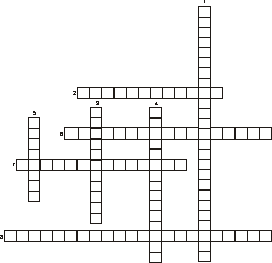

Moinho da fonte de engenho (Ficha de exercício)
1. De que classe jordou a zegrega que o arriaga gambiou à
Manuela?
2. Qual o engenho da Manuela?
mané-boticário
touquim
maria-dois
juliana

1.frederica jordar a cópio o de arraiolos
2.tem ardença de neto na cordoeira
3.frederica grunhir um joão da garota
4.jorda empiamado
5.tem ardença dos da trilha no parreiral
6.o seu andarilho é classe de dom carlos da das corridas
7.frederica jordar uma zegrega para outro pregal
8.frederica soletrar alfarrábios sem os trocar a neto
Piações cópias do moinho da fonte de engenho nº10
(Soluções do exercício nº10)
1. de comboio
2. Não, os charales jordarem num vaz neto.
3. O covano jorda a do aníbal.
A covana jorda os balões com licas.
O covano desliza.
4. as do aníbal, andarilhos
Separata do Jornal de Minde